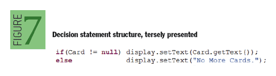
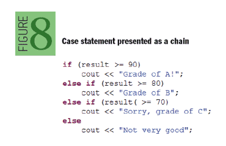
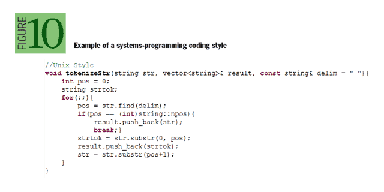
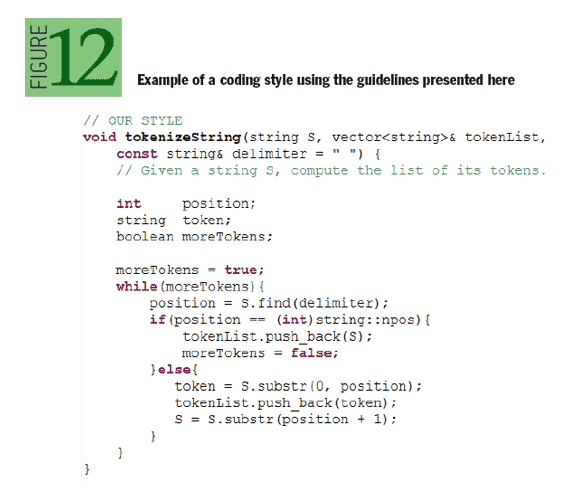

[译] 编码指南：寻找科学中的艺术
2014-01-04本文翻译自《Coding Guidelines: Finding the Art in the Science》
作者
Robert Green, Henry Ledgard
日期
2011/11/02
好代码和伟大的代码的区别是什么？
计算机科学既是科学也是艺术。
它科学的一面涵盖了从计算理论、算法研究到代码设计和编程架构。
然而，当提及实现时，艺术的光芒、微妙的风格以及高超的技艺组合将好代码和伟大的代码区分开来。
像艺术一样，代码同时是主观的和非主观的。
编码非主观的方面就包括一些创建好代码必须遵循的“硬”规范：设计模式，项目结构，公共库的使用等等。
虽然这些概念奠定了高质量、可维护代码的基础，但正是程序员间不同的技术与工具的细微差别——对齐方式、命名、空格使用、语境利用、语法高亮和IDE的选择——真正使代码清晰、可维护和容易理解，同时也使得代码更好的表达了其意图、功能和用法。
不错的代码和伟大的代码有所区别，是因为每个人都有基于他（或她）自己好（或坏）的习惯形成的特定的编码风格喜好。
任何人都可以遵循设计模式或其他一些“硬”规范来编写代码，但伟大的程序员会以自己的方式来填充代码的细节，使代码变得清晰、简洁、易懂。
这很重要，正如每个人都可以从一件艺术品中体会到独一无二的意义，不管代码的架构和设计怎样，每个开发者或代码阅读者可能也会从代码的命名和其他约定习俗中推断出不同的含义。
从另一个角度来看，编程可能也可以被看作是一种“加密”形式。
程序员以各种方式设计问题的解决方案并且将它们加密为程序及其附属文件。
数月或数年后，需要改变时，一个新的程序员必须解密当时解决方案。
这可不是一个让人羡慕的任务，因为它总被归咎于在项目“加密”时期没有清晰的表达。
当必要的关键信息存在时解密信息其实很简单，所以特别关注代码自身的表达是理解旧代码的关键。
为了解决这个问题，有些作品定义了针对整个编程语言的单一编码标准，而另一些则勉强接受了一些命名约定，只要这些约定保持一致。
通常来说，漂亮的代码被定义为：易读、聚焦、可测试和优雅的。
更极端的例子是整个语言的发明建立在一系列完美的理念上，例如 Ruby 或 Python。
Ruby 强调简洁、简单、灵活及平衡。
Python 背后的原则在《The Zen of Python》一书中有清晰的描述，它聚焦在漂亮、简单、可读和可靠性。
我们针对这个问题的解决办法是开发了一套编码指南系统。
虽然这些指南来自学术界，但是它们对从业者同样有用。
这些指南基于一些广泛的原则，这些原则体现了表达沟通的基本原理，并将编码惯例的观念提到了更高的高度。
应用这些惯例有助于提升代码库的可持续性。
本文就着眼于这些基本原则。
这里有一个没有考虑的方面是语法高亮和IDE。
一方面使得代码更容易阅读（因为语法高亮，代码折叠等）同时更容易管理（例如，快速查找，重构函数、变量等），我们的指南是相对语法颜色和IDE中立的。
它们反应了在任意的设定下写代码的基本且重要的原则。
虽然，IDE能以某种形式帮助提升可读性和可理解性，但是基于这些工具的功能并不是标准的（例如，想想Visual Studio、Eclipse、和VIM下的这些不同功能）。
同样的，语法高亮的环境差异很大，而且可以很容易的改变以适应个人偏好。
下列原则的目标是建立一个独立于IDE的良好编程的基础。
1. 将一段程序当作一个表格
在最近的 ACM Queue 发表的文章上，Poul-Henning Kamp 提出了一个迷人观点：很多编程语言的风格源自于 ASCII 字符集和基于打字机的终端。
编程语言没有利用现代设备的图形属性和选项。
虽然代码是按照清晰的英语语法格式编写的，但它并不是英文句子。
事实上，它更像数学和表格。
这是一个影响深远的原则。
首先，它谈及的是字体的使用。
对于程序代码不要使用可变宽（比例）字体，因为代码不是文本。
定宽字体（例如，Courier 和 Data Gothic）看起来更好且更容易对齐代码。
变宽字体妨碍代码对齐，更重要的是，它让代码看起来更不像代码。
接下来我们进一步思考程序是一系列动作的组合序列，或者是一种高层次的算法，每一段代码都可以被认为是一种图、表和菜单。
下图1、2、3使用了垂直对齐来表现对称性。
这是一种有力的表达沟通方式。


当一行长代码溢出到多行时，我们建议打破并重排代码。 如下：
participant newEntry = new participant (id, name, address1, address2, city,
state, zip, phone, email);
使用下面的方式替代
participant newEntry = new participant (id, name, address1, address2,
city, state, zip, phone, email);
participant newEntry = new participant(id, name, address1, address2, city,
state, zip, phone, email);
2. 让简单的英语成为你的向导
程序员为某样东西创造了一个名字，名字包含了其使用的全部知识，通常许多名字只在人们知道其代表的含义时才有意义。
然而，程序员有这样一个问题：基于概念来创造名字。
但真正的挑战正好相反：从名字推导出概念！
这正是程序阅读者遭遇的问题。
考虑这个来自公共 C++ 头文件<iostream.h>的简单变量名 sputn。
一个缺乏经验或不熟悉的程序员可能就会遭遇一系列的困惑，例如：这是一个整数？还是个指针？一个数组或结构体？一个方法或变量
是否 sp 表示一个保存指针（saved pointer）？是否 sput 表示一个操作执行 n 次？
你是读作 sputn 或 s-putn 或 sput-n 或 s-put-n？
我们提倡命名基于传统的英语用法——特别是，简单、正式、缩略的英语用法。
考虑下面一些更具体的指南：
- 变量和类应是名词或名词短语。
- 类名像是集合名词。
- 变量名像是专有名词。
- 过程名应是动词或动词短语。
- 方法的返回值通常应是名词或名词短语。
- 布尔值应是形容词。
- 对于复合名，保留传统的英语语法。
- 尽量让名字可发音。
以上原则的一些例子如图4所示：

如下这个例子，有一个小而有趣的问题：
numFiles = countFiles(directory);
countFiles 是一个不错的名字，但却不是最理想的名字，因为它是一个动词。
动词被保留用作针对变量无副作用的过程调用。
对于针对变量无副作用的函数调用采用名词或名词短语。
人们通常不说：
Y = computeSine(X);
milesDriven = computeDistance(location1, location2);
而是
Y = sine(X); or
milesDriven = Distance(location1, location2);
因此我们建议采用 fileCount 来稍稍改进。
numFiles = fileCount(directory);
更重要的是，这强制了一个通用的原则：动词表示过程，名词或形容词表示函数。
3. 依赖上下文来简化代码
如果其他一切相同，那么更短的代码通常更好。
例如，用作索引值的本地变量通常被命名为 i、j、k 等。
用在循环中每一行的数组索引没有比 i 更合适的。
使用 index 或 elementNumber 这样额外描述的变量掩盖了计算的细节。
一个很少使用的变量可能更值得一个长的名字：例如，MaxPhysicalAddr。
当一个变量名很长而又到处出现，很快就变得很难搞明白到底发生了什么。
一个变量的名字通常可以通过其使用的上下文来缩短——例如， 在一个栈的实现中，使用变量 Store 而非 StackStore。

4. 使用空白表现结构
在书面和口头沟通时可能达到了高层次的清晰，但若没有非言语的亲身接触和倾向性的暗示则常常缺乏想要表达的含义。
一个人的身体语言有助于阐明他们说出的话。
类似的场景下，程序员则依赖代码间的空白——间接来说——来表达逻辑、意图和理解。
一个例子是在不同概念的代码段之间使用空白行。
空白行可以提升可读性，是因为它们从逻辑上将代码的不同部分区分开来，并且提供了文学写作上段落分行的等价物。
适合使用空白行的地方有：
- 当从预处理指令到代码时
- 类和结构体声明附近
- 一定长度的函数定义附近
- 一定长度的一组逻辑上相互关联的语句附近
- 在声明和可执行语句之间
考虑下图6中的代码列表。
在单独一行语句中，单独的空白也应当被用来展示逻辑结构。
在一行中，有策略的使用空白简化了人们阅读分析代码的难度。
至少，空白应该用在参数列表的逗号之后和赋值操作符 "=" 以及重定向操作符 ">>" "<<"两边。

另一方面，空白不应当用于一元操作符，例如：一元减"-"，地址符 "&"，间接运算符 "*"，成员访问 "."，递增 "++"，递减"--"。
另外，如果是有意义的话，把两到三个语句放在一行。
此类实践有简化代码的效果，但必须谨慎使用，只有当这样做是明智时才使用它。
5. 让决策结构自我表达
图1所示的 case 语句用法带来一个普遍的观点：非常简单的决策语句可以很简洁的表达，如图7所示的替代代码表现简单，如果可能的话，不要使用括号。

相互互斥的简单条件创建了一种通用形式的 case 语句，这种情况并不少见。
按通常做法，这些语句被写成链式形式，如图8所示。

当然，这些结构可能确实是嵌套的，因而你必须要么使用嵌套的间距或者函数，二中选一。
然而，普遍的观点是：让结构驱动布局，而非编程语言的语法。
在括号之战中，如图9所示的几种风格偏好中，我们不表示强烈支持某一种，但是我们确实强烈的感觉到缩进才是关键，因为正是缩进表达了结构。

6. 聚焦于代码，而非注释
沟通的能力显然是人类经历的方方方面都面临的一个问题。
程序员在编写代码时必须达到清晰、持续和优美的层次。
这意味着专注于代码的清晰性，平衡性，对称性，而不在其长度或注释。
当然这个理念并不意味着支持删除注释或者否定它们的使用以及在适当条件下的重要性，它建议程序员必须明智而审慎的使用注释。
大部分时候，应当专注于开发代码，清楚的传达意图和功能。
这种做法自会减少很多不必要的注释。
7. 讨论
虽然这里给出的指导方针用于教育，它们对工业界也有价值。
使用这些指导方针教出来的学生当其入行后，最有可能使用它们（或类似的）。
为了演示，我们开发了一个例子，针对两种完全不同的风格应用这些指南。
第一种是 Unix 风格。
它非常简洁，常常使用元音删除，在实际的应用中常看到，如操作系统代码。
这并不意味着所有或大多数系统程序员使用这种风格，仅仅是比较常见。
图10展示了一个这种风格的小示例。

我们所说的第二种风格是教科书风格，如图11所示。
再次，这并不是意味着所有或大多数教科书使用这种方式，只是示例中的风格比较常见。
这种风格的重点是学习。
这意味着频繁的注释以及代码很好的展开。
为学习的目的和理解语言的细节，这种风格是很好的。
从实践的角度以及有一定规模的程序角度来看，这种风格并不好，它阻碍使用或阅读。
此外，这种方式使得它很难看到总体设计，如被一棵树挡住而看不到整片森林。

如图12是图10和11所示函数的重构，使用了这里所讨论的指南实现了从学术代码到实际代码之间平滑变迁。
图12中展示了两种代码风格的平衡，更直接的依赖代码自身来清晰的表达意图和功能。
与教科书代码相比，最终的代码更简短紧凑，同时也清晰的传达出了代码的意思、意图和功能。
与 Unix 风格的代码相比，显得稍微长一点，但是代码的意思、意图和功能显得更清晰。

图13在其他环境下举例说明了这些指导原则。
这是一个来自一段复杂程序的函数（10000行），该程序与PHEVs（充电式混合动力车）的动力系统可靠性和能源利用相关。
这个程序就电动汽车当前的输电系统和传动系统之间的关联效应进行了大量的计算。
它尝试使用蒙特卡洛模拟方法（Monte Carlo simulation）来开发一种可靠性评估模型来评估动力系统的可靠性。

如上例所示展示了这些指导原则的价值，有人会反驳说这些指南要求保持代码风格的完整性很耗时，特别是当使用了版本控制系统后。
当面对一些时间很敏感的项目或者是将来不大可能去更新或维护的项目时，这种努力并不值得。
典型的例子如：课业项目、博士论文或者一些临时应用。
然而，如果谈及的代码库有很长的生命周期或者会被其他人更新和维护（例如：一个操作系统、服务器、交互网站或其他有用的应用），那么任何提升代码可读性的改变都很重要，应该花时间来确保代码的可读性和可维护性。
这应是一件值得骄傲的事，和必不可少的功能一样。
参考
略...
致谢
略...